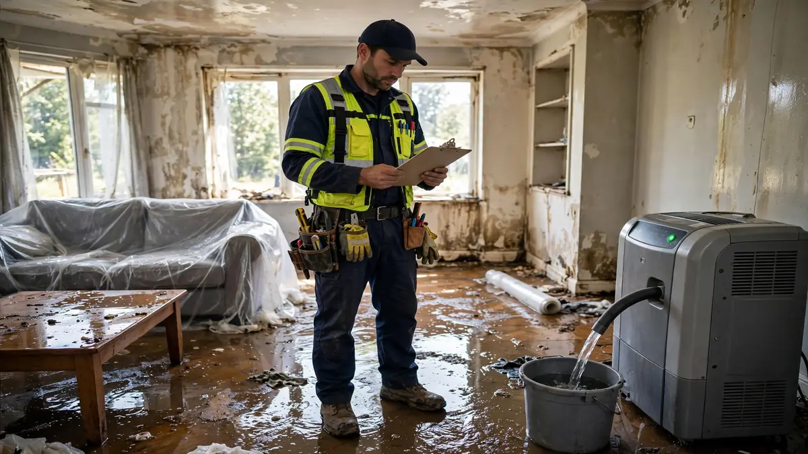

Guides · Oct 16, 2026 · 8 min read
How Much Does Water Damage Cost in Hollywood, FL?
It is the first question almost every homeowner asks after finding water where it should not be — and the hardest one to answer honestly over the phone. Water damage restoration does not have a menu price. A dishwasher leak caught in an hour and a sewage backup discovered after a weekend away are both "water damage," but their bills live in different universes. Flood jobs get their own notes below, because flood damage repair costs in Hollywood, FL follow slightly different rules than a clean-water leak.

One important note before the numbers: we are a referral service, not a contractor, so we do not set prices. Every figure below comes from published 2026 pricing benchmarks (Angi, HomeAdvisor, HomeGuide, and Florida-specific guides), cited where they appear. Treat them as budgeting ranges, not quotes — your actual cost depends on an on-site assessment of your specific damage.
Average Water Damage Restoration Cost in 2026
Nationally, the most-cited 2026 benchmarks cluster tightly. Angi reports an average of about $3,868, with typical projects landing between $1,383 and $6,369. HomeAdvisor's data is nearly identical: roughly $3,847 on average, ranging from $1,382 to $6,350. HomeGuide puts the typical range at $2,000 to $6,000. Florida-specific guides cite $1,300 to $5,600 for standard residential jobs.
Those averages hide the spread that actually matters. It helps to think in tiers:
Minor ($1,000–$4,000): one room, clean water, caught fast. A supply-line leak under a sink, extracted and dried the same day.
Moderate ($4,000–$12,000): multiple rooms or a full floor affected. Drying equipment runs for days; some drywall or flooring may need removal.
Major ($12,000–$30,000+): multiple floors, contaminated water, or damage left sitting long enough for mold to take hold. Now you are paying for remediation plus reconstruction.
Your job lands in a tier based on the factors below — which is exactly what an estimator is measuring during the first visit.
What Each Part of the Job Typically Costs
Restoration bills are built per square foot and per service. Published 2026 benchmarks for South Florida put water extraction and structural drying around $3.50 to $7.50 per square foot, with the exact number driven by contamination level. Other line items you will commonly see: Understanding the water damage repair process — extraction, drying, then rebuild — is the easiest way to see where a quote's money actually goes.
Dehumidification: roughly $25–$75 per day, per unit — and a whole-house job may need several units running for most of a week.
Drywall removal and replacement: about $1–$3 per square foot to remove, $2–$6 to replace and finish.
Flooring: drying hardwood runs $5–$10 per square foot; replacing it can reach $8–$20. Carpet pad is almost never saved — removal runs a few dollars per square foot.
Antimicrobial treatment: roughly $2–$4 per square foot on affected surfaces.
When a quote looks confusing, ask for it itemized this way. A single lump sum tells you nothing; a line-item list tells you everything.
7 Factors That Decide Your Final Bill
1. Water category. Clean water (Category 1) is the cheapest to handle. Gray water costs more; black water — sewage or floodwater — can cost 50–100% more than clean water because of containment, protective gear, and disposal rules. Our guide to water damage categories explains why the distinction matters.
2. How long the water sat. This is the factor homeowners control most — and lose the most money on. Drying started within 24 hours is a standard job. Past 48 hours, mold risk adds 10–40% or more, plus likely remediation. Past 72 hours, expect extensive mold treatment on top of everything else.
3. Materials affected. Tile over concrete dries cheaply. Hardwood, carpet pad, insulation, and drywall do not — they either need aggressive drying or full replacement, and replacement is always the expensive path.
4. Size of the affected area. More square feet means more equipment, more labor hours, and more days of dehumidifier rental. Small contained jobs stay in the minor tier almost regardless of other factors.
5. Mold. If mold has started — common in Florida within 24–48 hours of exposure — remediation becomes its own line item. See how fast mold grows for why speed matters so much here.
6. Reconstruction vs. drying only. The benchmarks above mostly cover mitigation: extraction, drying, sanitizing. Rebuilding — new drywall, paint, flooring, cabinets — is often quoted separately and can equal or exceed the drying cost.
7. Emergency timing. Middle-of-the-night emergency response can carry a call-out premium. It is still almost always cheaper than letting water sit until morning.
Why Hollywood, FL Jobs Often Run Higher Than Average
Three local realities push Hollywood costs toward the upper half of the national ranges. First, humidity: our warm, wet climate means mold starts faster and drying takes longer — more equipment days. Second, housing stock: many Hollywood homes have aging plumbing and older construction where water travels farther behind walls before anyone notices. Third, storm season: after major rain events, demand spikes and scheduling gets tight, which is one more reason fast action saves money twice over.
What Is Usually NOT in a Restoration Quote
Two common surprises: the plumbing repair itself (fixing the burst pipe is a plumber's line item, separate from water cleanup) and full reconstruction finishes (paint, premium flooring, cabinetry are often quoted after drying is verified). Neither is a scam — they are just different trades. Make sure you know which quote covers what before comparing numbers.
Will Insurance Cover the Cost?
Often, yes — for sudden and accidental events like burst pipes or storm-driven roof leaks. Gradual leaks and rising floodwater are the usual exclusions. Because coverage directly changes your out-of-pocket cost, read our full guide on whether homeowners insurance covers water damage in Florida before you assume anything.
How to Avoid Overpaying
Get the estimate itemized by service and square footage, not as one lump sum. Compare scope, not just totals — the cheapest quote that skips moisture mapping is the most expensive mistake you can make. Verify what is excluded (plumbing repair? reconstruction?). And act fast: every day of delay is the one cost factor entirely in your hands. If you need a local provider who will put all of this in writing, emergency water extraction and structural drying teams in our network provide itemized on-site assessments.
Frequently Asked Questions
What is the average cost of water damage restoration in Hollywood, FL?
Published 2026 benchmarks put typical residential jobs between $1,300 and $6,400 nationally, with Florida figures clustering around $1,300–$5,600. Minor single-room jobs can come in near $1,000; major multi-room or contaminated jobs can exceed $30,000. Your tier depends on water category, area size, materials, and how fast drying starts.
Why do quotes for the same job vary so much?
Because estimators are pricing different scopes. One company quotes extraction and drying only; another includes drywall replacement and repainting. Always compare itemized line items — total price without scope is meaningless.
Does homeowners insurance cover water damage restoration?
Sudden and accidental water losses are typically covered; gradual leaks and floodwater usually are not. Your policy's fine print decides. Our Florida insurance guide walks through the common covered and excluded scenarios.
Can I save money by drying it myself?
For a small clean-water spill caught immediately, yes — towels, airflow, and a dehumidifier can work. But without moisture meters you cannot verify what is dry inside walls and under floors, and hidden moisture becomes mold, which costs far more than the professional drying would have.
How quickly do costs rise if I wait?
Fast. Industry benchmarks suggest mold-related cost adders of 10–20% at 24–48 hours and 20–40% beyond that, plus likely remediation. In Hollywood's humidity, the clock runs faster than in drier climates.
Do you provide free estimates?
We connect you with local Hollywood providers — most offer free on-site assessments with itemized written estimates. Call (754) 294-7959 anytime; emergency response runs 24/7.
If water is spreading right now, do not wait on a quote — here is what to do in the first hour, and contact us if you want help finding a local crew.